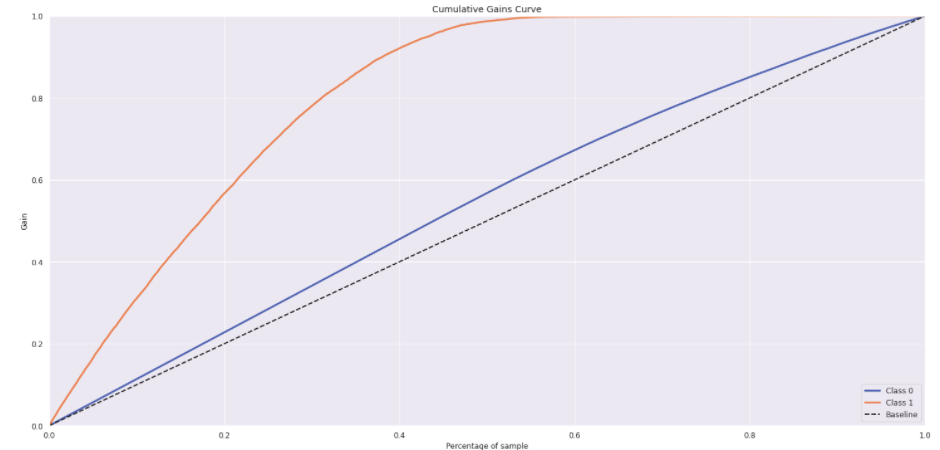
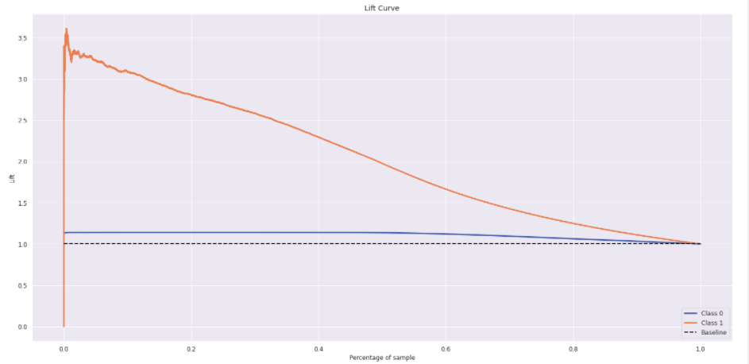
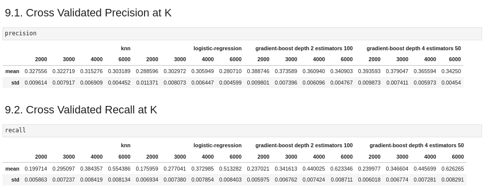
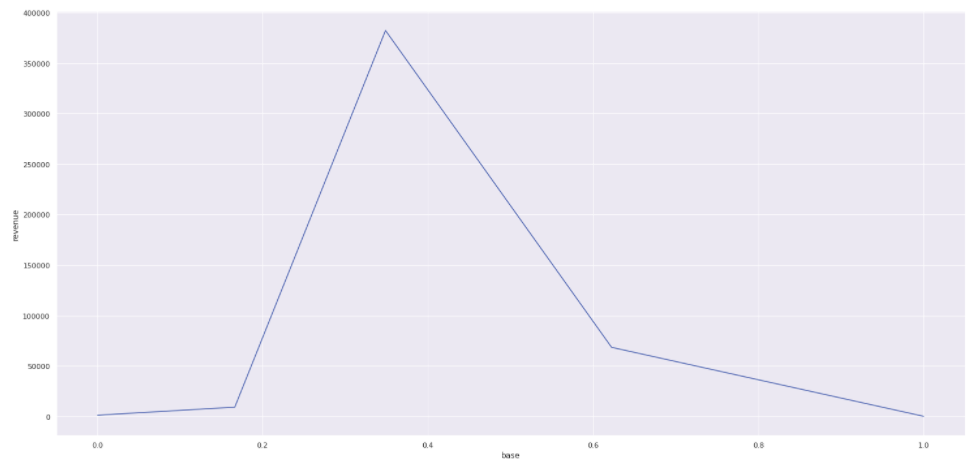

Health Insurance Cross Sell
This project was made by Daniel Penalva.
1. Business Problem.
2. Business Assumptions.
I assume there will be offered the new product to only a small percentage of the base, lowering the cost of acquisition of the new plan. To do that we need to order the base according to the probability of customers acquiring the new product.
3. Solution Strategy
My strategy to solve this challenge was:
Step 01. Data Description:
- I collected the data from postgresql database and joined all relevant table in one.
- Describe the location, variety and counting metrics of features: previously insured, age, response, region_code, driving license, policy sales and gender.
Step 02. Feature Engineering:
- No feature engineering was performed for this dataset.
Step 03. Data Filtering:
- Filtering also was not necessary in this project.
Step 04. Exploratory Data Analysis:
- I plotted the boxplot, barplot and also histogram of features such age, gender, annual premium against the response, aiming to see how they differently behave regarding the response target.
Step 05. Data Preparation:
- I divide the dataset in train and test, to perform the transformations according to the train and reserve the test to the final test of the models.
- Used feature scaling necessary to the algorithms that use distances or fit features weight to work well.
- Used Robust Scaler for features with outliers and Standart Scaler for features with near normal distribution.
- Used Frequency Scaler for some categorial variables.
Step 06. Feature Selection:
- I Performed an Extra Trees fit with 1000 tree estimators, reading the feature importance of each feature in the model.
- Selecting only features with at minimum of 5 % of importance
- Features selected : 'vintage','annual_premium','age','region_code','vehicle_damage','policy_sales_channel','previously_insured'
Step 07. Machine Learning Modelling:
- I fitted K Nearest Neighbors, Logistic Regression and Gradient Boosting models, plotted the lift and gain curves to access the model efficacy.


Step 08. Hyperparameter Fine Tunning:
- I performed cross validation on 4 algorithms, and plotted the metrics of top k precision and top k recall.

- The Gradient Boosting algorithm with 50 steps estimators and tree depth of 4 outperformed the others.
Step 09. Convert Model Performance to Business Values:
- I divided the performance the model per buckets and counted the number of customers per bucket.
- We infer a cost of acquisition and a minimal revenue and plotted the total revenue against the ordered base (ROI Curve).

Step 10. Deploy Modelo to Production:
- I done a class containing the ETL from data cleaning to prediction, implemented an API in Flask and deployed the model to Heroku.
- Made a google sheets script to access the API from a google sheets and give the ordered result of the prediction.
4. Top 3 Data Insights
Hypothesis 01:
- 99 % of previously insured customers dont wanna a new insurance of car, this could bias the model but in the feature selection we discovered that this feature is the last in importance.
Hypothesis 02:
There are few regions code of higher interest in car secure than the others.
5. Machine Learning Model Applied
- I applied the Gradient Boosting with 4 depth and 50 estimators in the production set.
6. Business Results
- With 40% of the base ordered the lift would be of approximate 200% and the revenue will be greater according to the ROI curve.
- We have API that can communicate with any application. In this project we tested the Google Sheets, where the easy of use would potentiallize the results.
7. Lessons Learned
- A good ETL with easy to use API, for model the order of importance of a base of customer, turn out to be profitable for the business and is a good Data Science product.
LICENSE
All Rights Reserved - Comunidade DS 2022